5. Visualization: every plot, and how to read it
Source:vignettes/visualization.Rmd
visualization.Rmdtransitiontrees ships a pure-ggplot2 visual
layer (no JavaScript dependency in the core) plus two optional richer
renderers. Every plot returns a standard object you can theme, save, or
further modify. This vignette tours them all and reads each one.
A shared convention across the static tree styles: node size = context count, node fill = the most-recent state of the pathway, and edge thickness = the volume of sequences flowing down that branch.
Setup
Every plot below is drawn from the same fitted, pruned tree on the
bundled trajectories data (138 learners, three engagement
states). We fit it once here and reuse it throughout.
library(transitiontrees)
data(trajectories)
set.seed(1)
tree <- context_tree(trajectories, max_depth = 3L, min_count = 5L)
pruned <- prune_tree(tree, criterion = "G2", alpha = 0.05)
pruned
#> <transitiontrees> 18 nodes, depth <= 3, 3 states [pruned]
#> alphabet : Active, Average, Disengaged
#> fit on : 136 sequences, 1870 observations
#> smoothing: floor(ymin=0.001, rule=interpolate) min_count = 5
#> pruned by: G2 alpha = 0.05
#> (start) n=1870 -> Average (0.43)
#> |-- Active n=658 -> Active (0.70)
#> | |-- Active n=433 -> Active (0.79)
#> | | `-- Average n=70 -> Active (0.53)
#> | `-- Average n=144 -> Active (0.50)
#> | `-- Disengaged n=12 -> Average (0.83)
#> |-- Average n=751 -> Average (0.61)
#> | |-- Active n=160 -> Average (0.52)
#> | | `-- Disengaged n=10 -> Average (0.50)
#> | |-- Average n=419 -> Average (0.68)
#> | | `-- Active n=80 -> Average (0.57)
#> | `-- Disengaged n=122 -> Average (0.52)
#> | `-- Disengaged n=31 -> Average (0.71)
#> `-- Disengaged n=325 -> Disengaged (0.48)
#> |-- Active n=23 -> Active (0.39)
#> |-- Average n=134 -> Average (0.50)
#> | `-- Active n=17 -> Active (0.41)
#> `-- Disengaged n=139 -> Disengaged (0.68)1. The fitted tree, four ways
Horizontal phylogram (default)
Root on the left, depth rightward; every leaf is labelled with its full arrow-form pathway and the predicted next state. This is the style for a paper when you need to cite specific pathways inline.
plot(pruned, style = "horizontal")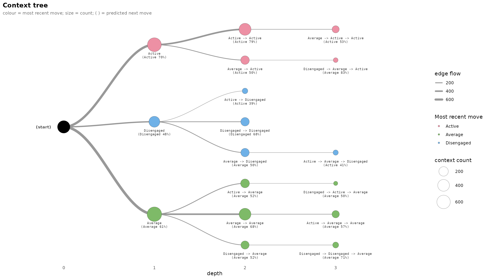
point_size_range and edge_size_range
exaggerate or compress the size dynamic range – useful for slides where
the count contrast must read from the back of the room. The encodings
are unchanged; only the scales differ.
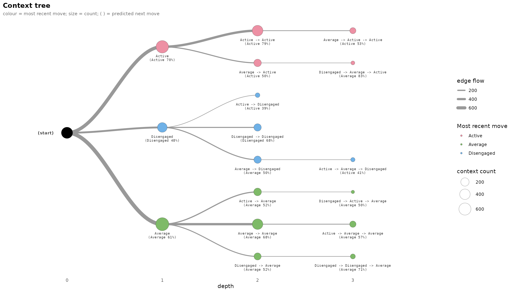
Radial dendrogram
The same tree wrapped into a circle: the eye goes to the thick central branches (the corpus highways) versus the thin outer twigs (contexts pruning kept on evidence, not volume).
plot(pruned, style = "dendrogram")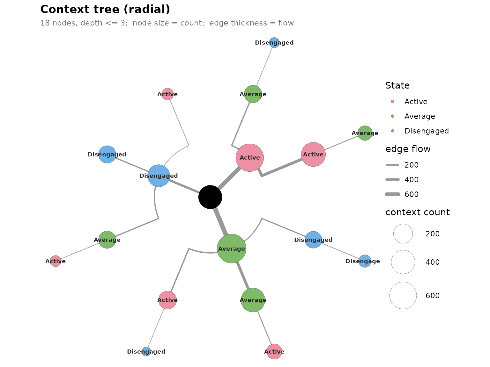
Icicle / sunburst (needs ggraph +
tidygraph)
A space-filling partition: arc angular width is proportional to count, so a dominant state visually swallows the ring – an honest depiction of class imbalance.
plot(pruned, style = "icicle")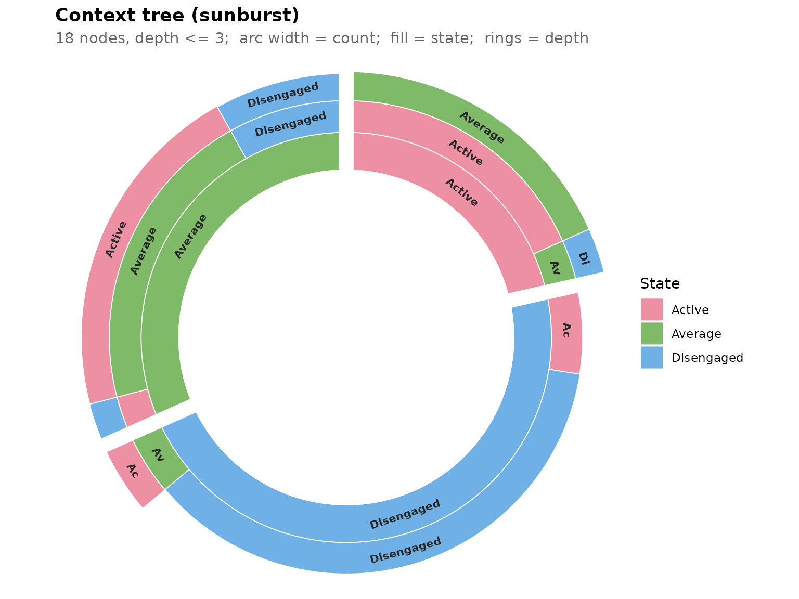
Interactive collapsible tree (needs visNetwork)
A draggable, zoomable widget carrying the same encodings, with a hover tooltip for each node’s full pathway, count, and distribution. The exploration tool: collapse the dominant spine and the rare informative branches become legible.
plot(pruned, style = "interactive")2. Pathway-centric plots
These complement the tree by ranking pathways rather than drawing topology.
Next-state heatmap
Each row is a context, each column a next state, each cell
P(next | context), modal cell bold; a >
prefix marks a context whose modal next state flips versus its shorter
parent. Sorting the same data two ways is the single
best “common vs informative” figure:
plot_pathways(pruned, top = 12, sort_by = "count") # the highways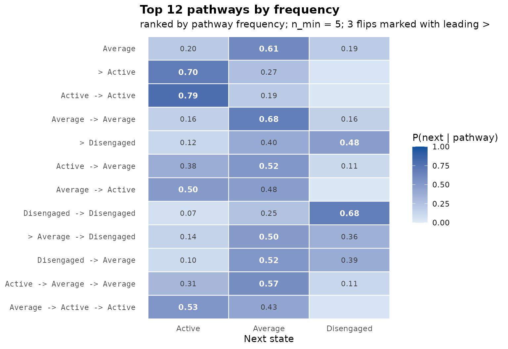
plot_pathways(pruned, top = 12, sort_by = "divergence") # the informative ones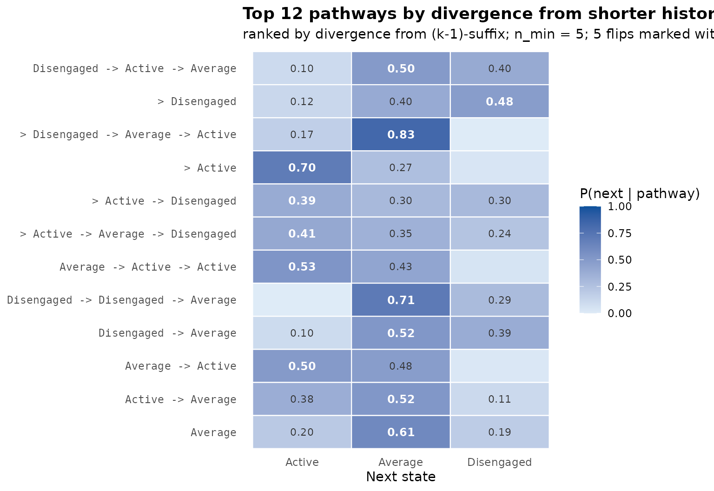
Sorted by count the bright cells stack on the most frequent next state; sorted by divergence they move off it. That lateral shift is the thesis in one comparison.
Divergence lollipop
Per-context KL from the shorter parent, ranked, with orange points
marking modal-flip contexts – the histories that genuinely
change the prediction. min_count removes
small-sample mirages.
plot_divergence(pruned, top = 12, min_count = 5)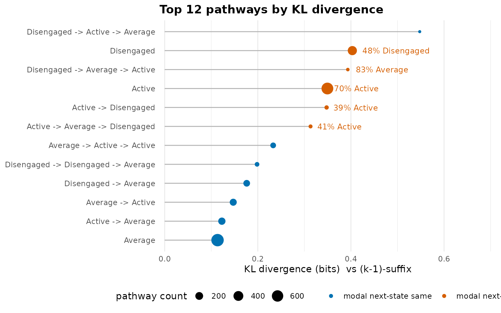
Per-context distributions
The full next-state distribution for each context as small multiples – peaked panels are near-settled continuations, flat panels are the decision points where history does not resolve the next state.
plot_distributions(pruned, top = 6)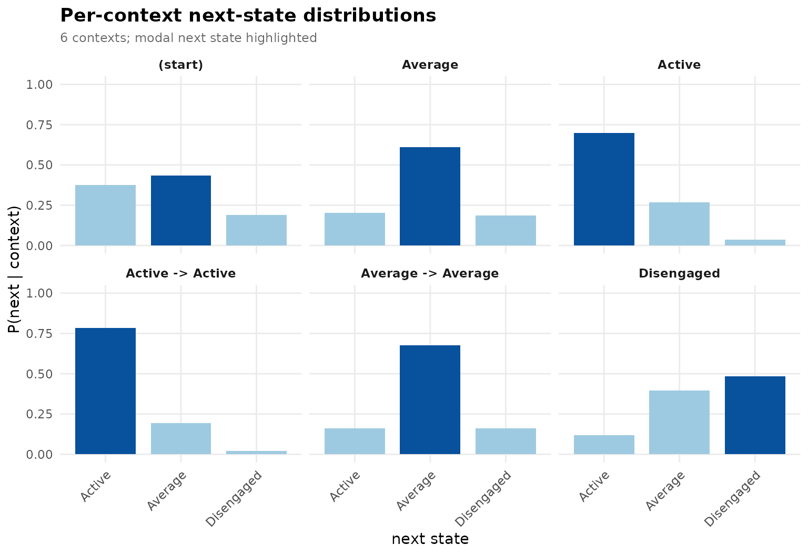
3. Diagnostic plots
How much memory does one pathway need?
plot_pruning() walks a pathway’s suffix chain – the full
context, then the same context with its oldest move dropped, down to the
root – and marks which contexts the pruning test keeps (solid) versus
drops (faded). It answers, for that one pathway, how far back history
actually has to reach.
plot_pruning(tree, "Active -> Active -> Average")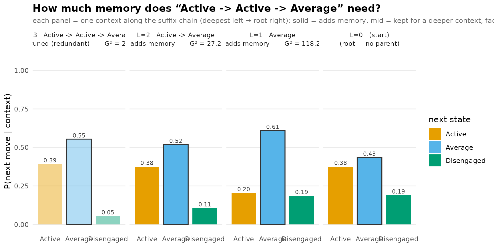
Predictive quality
plot_predictive() scores sequences against the fitted
tree three ways. For this tour we score the bundled
trajectories themselves; in a real evaluation pass
genuinely held-out sequences (the Advanced analysis vignette
shows the cross-validated route).
type = "logloss" – per-position surprise in bits against
position; below the uniform ceiling is structure the model
exploited:
plot_predictive(pruned, trajectories, type = "logloss")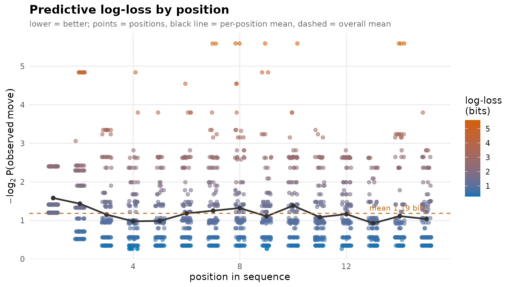
type = "ecdf" – the distribution of the probability
assigned to the state that actually occurred; steep steps reveal
calibration plateaus (e.g. a mass of three-way-open branch points):
plot_predictive(pruned, trajectories, type = "ecdf")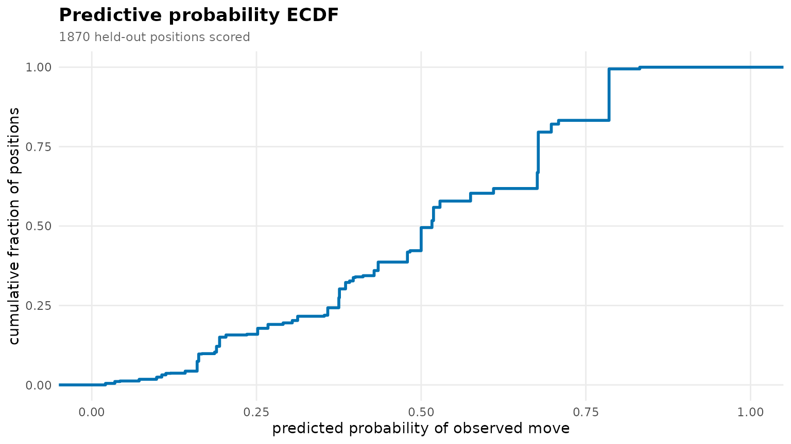
A third type, type = "position", traces each individual
sequence’s confidence move-by-move (one grey line per sequence). It is a
per-sequence view that only reads cleanly for a handful of sequences, so
it is omitted here; reach for it when you want to inspect a few specific
trajectories rather than the corpus as a whole.
4. Forward trajectory trees (needs ggforce)
The context tree reads backward; plot_trajectories()
draws the same sequences forward in time. Colour by
frequency (how many sequences walk each path) or by
predictability (P(state | history) from
the model). Read together they separate traffic from predictability – a
wide-but-pale edge is a high-traffic decision point.
Forward trajectories show their structure best on a richer alphabet,
so this section uses the bundled ai_long log (eight
AI-prompting move types) rather than the three-state engagement data
above.
data(ai_long)
tree_ai <- context_tree(ai_long, actor = "project", session = "session_id",
action = "code", max_depth = 3L, min_count = 10L)
pruned_ai <- prune_tree(tree_ai)
plot_trajectories(tree_ai, measure = "frequency", min_count = 20L)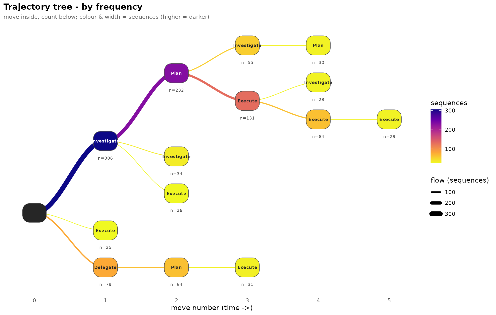
plot_trajectories(pruned_ai, measure = "predictability", min_count = 20L)
5. Inferential plots
Bootstrap forest plot
Each pathway’s 95% bootstrap interval on G-squared against the chi-square critical value (dashed line); colour encodes the trust quadrant. A bar entirely to the right is reproducibly informative.
boot <- bootstrap_pathways(pruned, iter = 200L, seed = 1L)
plot(boot)
#> `height` was translated to `width`.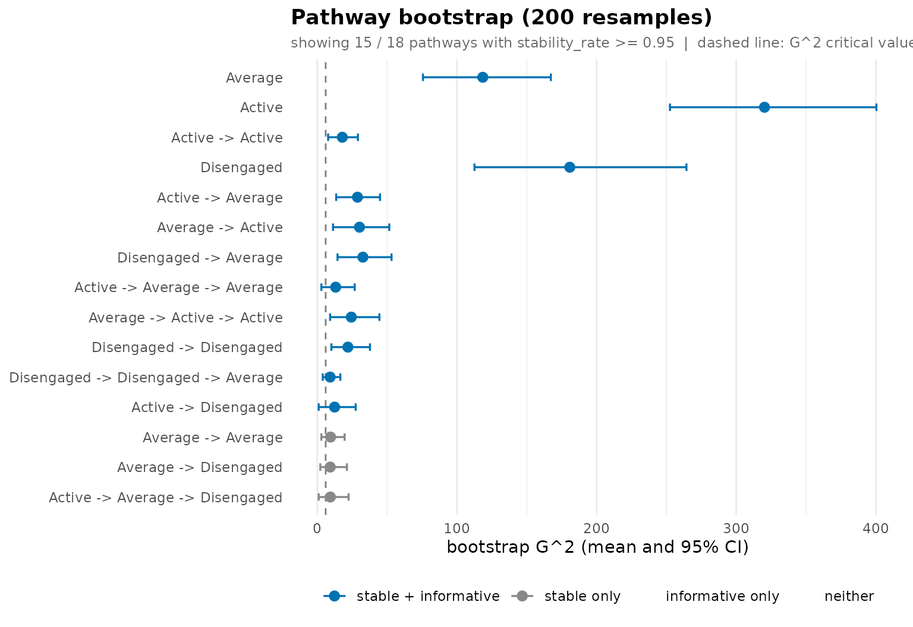
Per-pathway resample distributions
plot_pathway_resamples(boot, stat = "divergence", top = 6)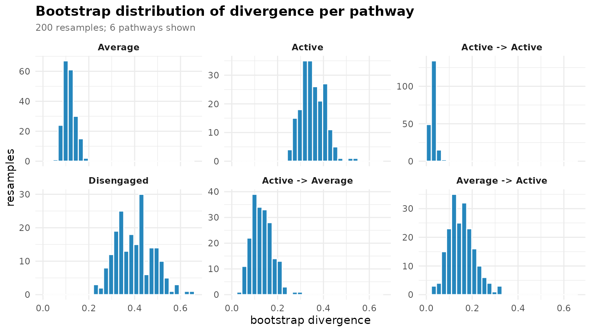
Cohort comparison: permutation null
We name an external group column (Achiever) on the
bundled group_regulation_long log;
context_tree(group = ) fits one tree per cohort, and
compare_trees() consumes the group directly.
data(group_regulation_long)
grp_reg <- context_tree(group_regulation_long,
actor = "Actor", time = "Time", action = "Action",
group = "Achiever", max_depth = 2L, min_count = 10L)
cmp <- compare_trees(prune_tree(grp_reg), iter = 199L, seed = 1L)
plot(cmp)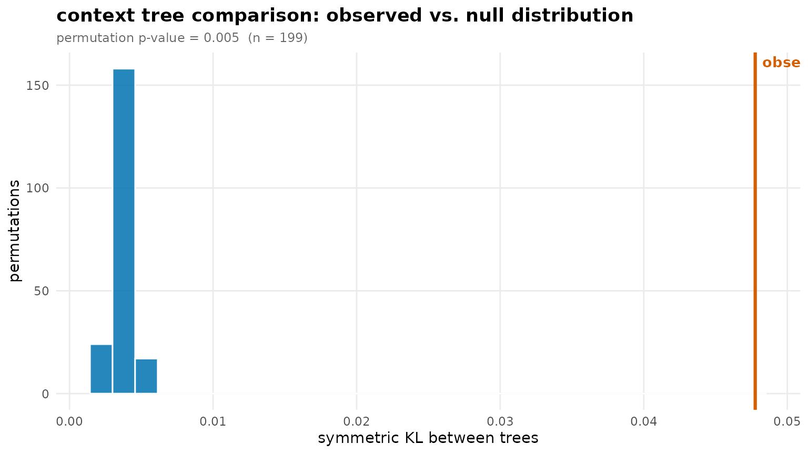
The observed distance (orange line) sits in the right tail of the label-shuffled null (grey) – the visual form of the permutation p-value.
Tuning surface
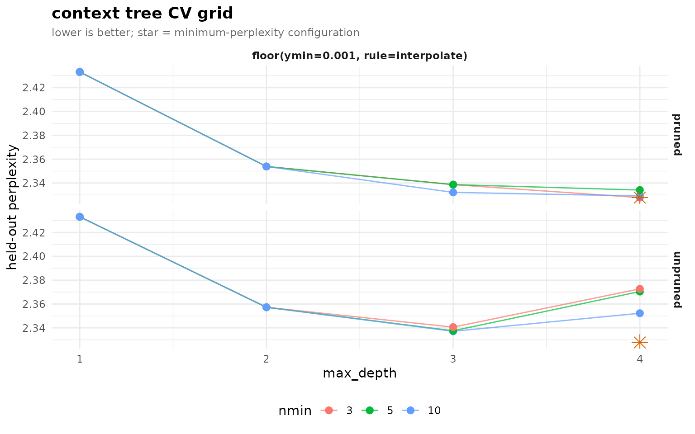
A flat-then-rising perplexity curve is the picture of a short-memory process; the orange star marks the cross-validated winner.
Group difference map
plot_difference() draws the per-context residual map for
the same group =-fitted tree – where two cohorts resolve
the same history toward different next states. depth = 1L
keeps the map to the single-state contexts so the rows stay legible (a
deep tree has too many contexts to label).
plot_difference(grp_reg, depth = 1L)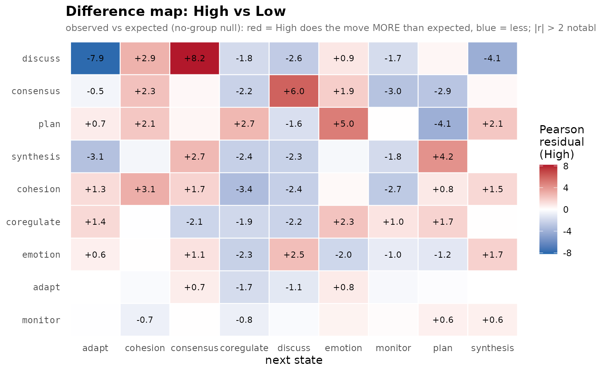
Recap
| Goal | Function |
|---|---|
| The tree | plot(style = c("horizontal", "dendrogram", "icicle", "interactive")) |
| Rank pathways |
plot_pathways(), plot_divergence(),
plot_distributions()
|
| Memory of one pathway | plot_pruning() |
| Held-out quality | plot_predictive(type = c("logloss", "ecdf", "position")) |
| Forward trajectories | plot_trajectories(measure = c("frequency", "predictability")) |
| Reliability |
plot(<bootstrap>),
plot_pathway_resamples()
|
| Comparison |
plot(<comparison>),
plot_difference()
|
| Tuning | plot(<tune>) |